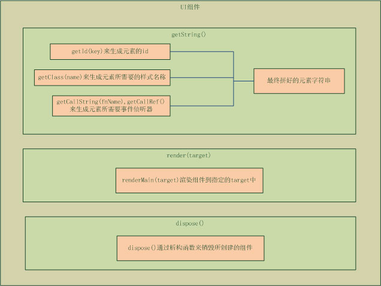

Tangram-component UI是基于轻量级，结构单一的思想而构建的，这样的设计理念决定了UI组件的继承关系必须是单一继承。这样UIBase作为UI组件的基类就应运而生了。这里说的UIBase就是指baidu.ui.Base，它定义了UI组件的一般通用接口，baidu.ui的命名空间下的UI组件都继承于该基类，所以对于baidu.ui.Base基类有一个系统的了解将有助于更好的使用或是开发UI组件。
关于UI组件的页面元素生成方式，实现方法有两种：使用动态生成DOM节点的方式来插入到页面以完成页面元素的生成，还有以字符串拼接html来渲染页面元素。但是第一种方式在程序中容易导致循环引用的隐患，所以Tangram UI组件采取了第二种方式，即字符串拼接，来完成dom元素的生成。
在生成一系列的html页面元素的字符串时，对于需要接受管理的DOM节点，都可以通过接口生成一个ID来标识该节点；对于节点需要的样式名称，可以通过接口生成的样式名称来定义；对于节点的触发事件的注册，可以通过接口生成对应的事件字符串来完成。这样的一个字符串生成完整以后，就可以放到使用者指定的容器去渲染生成了。而这些生成字符串的接口，就是UI组件最基本和通用的接口，将这些最基本的接口抽象出来就形成了baidu.ui.Base基类了。
baidu.ui.createUI(constructor, options)是一个静态方法，我们这里也称他为一个创建UI构造函数的接口，他是UI组件的构造生成器，我们可以把它的功能简单理解为继承或是复制，在createUI接口中，第一参数constrcutor，接收一个开发者自定义的构造器函数，而通过接口程序的包装，最终返回出一个新的UI构造器。我们可以理解为该新构造器继承复制了baidu.lang.Class和baidu.ui.Base中的所有接口，这样，通过createUI的包装，新构造器就拥有了Base的所有功能，这也正是UI组件构造器的生成方式。
以下内容主要讲述baidu.ui.Base基类中接口的功能，相关的例子会在下面的小节中以综合使用范例的形式展示，对于该节的内容可以简单的作概念性的理解。
一个UI组件的设计过程，一般会设计三个方法：getString、render、dispose方法。你需要在getString方法中拼接组件所需要页面元素，然后在render方法中进行渲染，最后通过dispose的析构可以销毁组件释放内存空间。则baidu.ui.Base基类的接口主要是在这三个方法分别被使用，更具体的接口使用可以通过以下的图例来加以理解：

Base作为所有UI组件的基类，为此，它只定义了一些最基础的和通用的接口，大体包括以下这些：getId，getClass，getMain，getBody，getCallString，getCallRef，on，renderMain，dispose。
getId(key)：取得当前实例的唯一标识id，key是一个可选的参数，如果存在则附加在返回的id的后边，该方法一般使用于生成一些dom节点的id。
getClass(name)：生成一个元素的class名称，格式为tangram-uiType，uiType由UI组件定义，如uiType为carousel，则生成的元素class名称为tangram-carousel，参数name是一个可选参数。如果存在则附加在uiType后边返回。
getMain()：当组件被渲染以后，可以通过getMain()来取得最外层的容器
getBody()：当组件被渲染以后，可以通过getBody()来取得元素的id为getId()的容器
getCallString(fnName, param)：取得事件调用的字符串，可以和一个事件绑定，如：’onmousedown=”’+ this.getCallString(‘_onMouseHandler’, ‘param’)+’”’，第一参数表示需要被执行的该实例的成员函数，第二参是可选参数，表示该成员函数所需要的参数
getCallRef()：取得一个实例的前缀，后面紧跟的成员函数需要手动拼接，如：’onmousedown=”’+this.getCallRef()+’._mouseHandler(event);”’。
on(element, eventName, handler)：如果当某些元素无法使用字符串的形式邦定事件时，可以使用on的方法邦定，使用该方法邦定的事件会在调用到dispose时自动解除邦定。
renderMain(target)：使用该方法来渲染出一个UI组件的main元素，并返回渲染的main元素。
dispose()：析构函数，当UI组件需要销毁时，调用该方法来销毁组件并释放内存空间。
以下用一个简单的例子，开发一个Button组件来说明baidu.ui.Base的接口在实际应用中所体现的作用。例如，我们打算开发这样一个按钮组件：
baidu.ui.Button = baidu.ui.createUI(function(options){ //创建实例 |